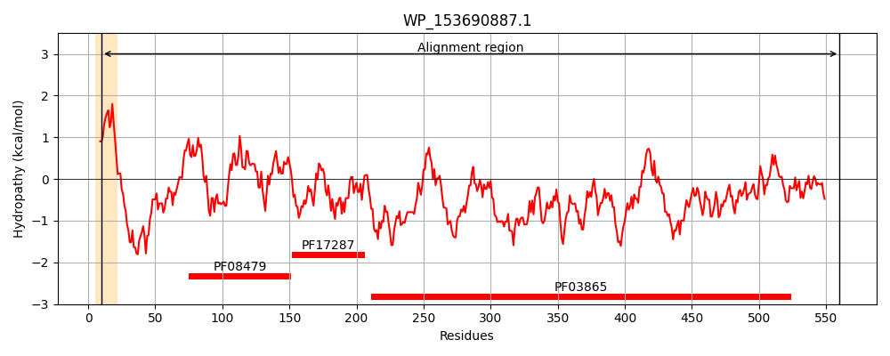
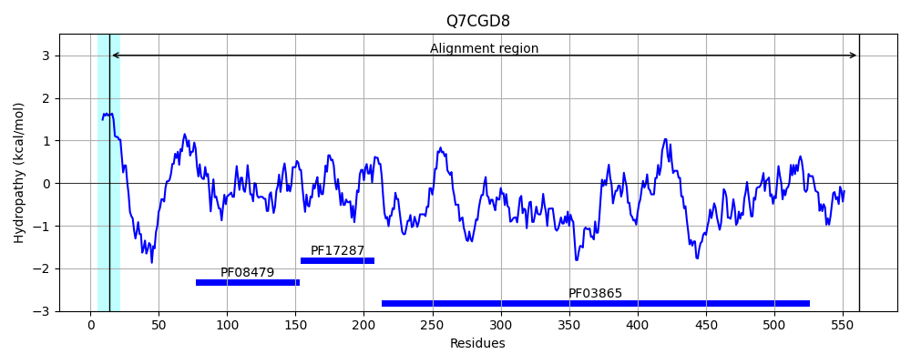
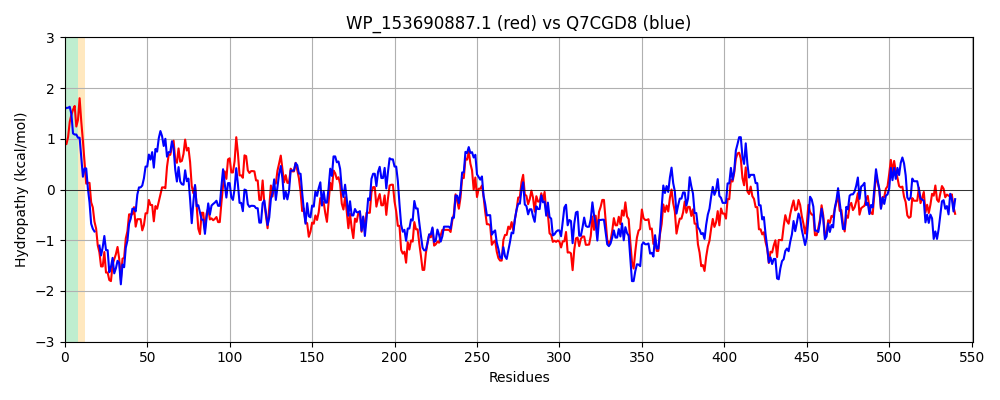

Hit Accession: Q7CGD8
Hit TCID: 1.B.20.1.11
Hit Description: gnl|BL_ORD_ID|15408 gnl|TC-DB|Q7CGD8|1.B.20.1.11 Outer membrane transporter CdiB OS=Yersinia pestis OX=632 GN=cdib PE=3 SV=1
Mach Len: 551
e:0.000000
Query TMS Count : 1
Hit TMS Count: 1
TMS-Overlap Score: 0.700000
Predicted Substrates:CHEBI:8526;protein polypeptide chain
BLAST Alignment:
Score: 1764 , Bit scores: 684 bits, E-value: 0.0e+00, Alignment length: 551, Percentage identity: 59
Query: 10 VLIICILPAWAWAAPVDTVREQQFINQQQRQQALENQLAPPSPDIHLSAEEINTDDGLFPVEQPCFAISQVILQGAEALSHWLPLQRQTNKAIGRCLGGKGINLLMAQLQNILIDRGYITSRILAPQQDLKSGVLRLVVMPGYIREARLTEDSDDYLWLASAFPATDGKLLDLRDIEQGLENLQRLPTVQASMEIVPGETPGQSDIVINRRQERFWRVDASLDDSGSNATGRYQGNLTLSLDNPLALSDLFYLSGSHNLDGNGGKSSKNLTGHYSIPLGYWQLGLTASQYDYMQTVAGANGDYQYSGKSKNVDFQMSRVLHRSGSQKTTLSADVLAREQRNFINDTEIAVQRRQTAAWKLGLQHRHYLGNATLDVGVSYQRGTRWFGAQPAPEEQWGEATALSKILQFNAQLNLPFALGGQNFRFTSRYQRQMSSTPLTSPDMFSIGNRWTVRGFDGERALTASHGWYIRNDIAWSTPLPGQEFYLGADYGEVGGAGSETLVGKHLAGGVAGLRGQYHRASYDLFAGIPLAKPDGFKTDPATFGFSVSWSY 560
+L I +P ++ A + V QQ I+QQ+RQ+ALE +LAPP+PD+ LSA +FP+E PCF I+++ + GAE L WLPLQR ++A G+CLG KGINLLM+Q+QN L+D GY+T+R+LAPQQDL SG L L V+PG IR LT DS+ Y+ L SAFPA G LLDLRDIEQGLENLQR+PTVQA+M ++PG PG++DI++N +Q + WR+ ASLDDSG+ +TGRYQG TL LDNPL+LSDLFY+S L G K + NLTGHYS+P GYW G+TAS+YDY Q VAG NGD Y G+S+NV FQ+SR+LHR+ SQKTT + DVL R +N+INDTE+ VQRR+T+AW++GLQHRH++ A LD G+SYQRGTRWFGA PA EE +GEATALSKIL+ NAQL++PF + QN + +YQRQ ++TPLT D FSIG RW+VRGF+GER L A GW++RNDI W PLPG E Y+G DYGEVGG L+G+HLAG G+RG YDLFAG PL+KP+GFKTD GF+++W Y
Sbjct: 14 LLKIVAIPDASYGAELAPV--QQSIHQQERQRALEERLAPPTPDVRLSAPSAFFSRIIFPLETPCFVINRIKISGAEPLPRWLPLQRIADQAQGQCLGAKGINLLMSQMQNRLVDHGYVTTRVLAPQQDLNSGTLALNVVPGKIRGVELTPDSNRYVTLFSAFPARAGTLLDLRDIEQGLENLQRVPTVQANMVLIPGSAPGETDIILNWQQRKMWRLAASLDDSGTRSTGRYQGGATLFLDNPLSLSDLFYVSAGGALQRRGDKGTNNLTGHYSLPFGYWTAGMTASRYDYYQAVAGLNGDINYRGESENVAFQLSRLLHRNASQKTTFTYDVLTRSSKNYINDTEVEVQRRRTSAWRIGLQHRHFISQAILDAGISYQRGTRWFGAIPAQEEYFGEATALSKILRLNAQLDIPFVVMAQNLHYNLQYQRQSTNTPLTPQDQFSIGGRWSVRGFNGERTLIADRGWWVRNDIGWYLPLPGHELYVGVDYGEVGGRSGAYLLGRHLAGSAVGVRGNVLNTRYDLFAGKPLSKPNGFKTDSLAVGFNLNWLY 562 | Protein Hydropathy Plots: |
|---|
|  |  |
Pairwise Alignment-Hydropathy Plot:
|
|---|
|  |